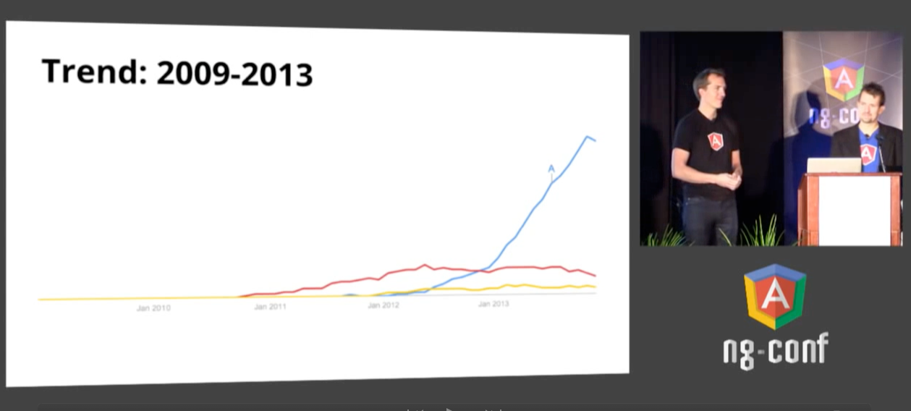
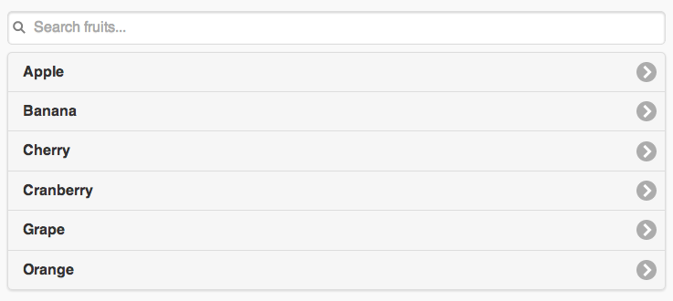
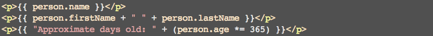

An in-house AngularJS Presentation
Presented by Carlos Justiniano / @cjus
The changing web
- The advent of AJAX marked a web shift
- As a result sites became more responsive
Handling front-end complexity
- Code moves into the front-end
- Developers face increased code complexity
- Enter: open-source front-end web frameworks with names like: Backbone, Ember, Knockout and Angular
AngualrJS
- Angular is loosely similar to many of the other frameworks that emerged to address the increasing demands of modern web development
- However, the similarities quickly give way to an amazing array of cleanly integrated and forward thinking features
- We'll cover many of Angular's features in this presentation
Why AngularJS?
- Embraces the spirit and potential of HTML5
- Offers features which are designed to work together
- Simplifies building modern web application
The original vision
Originally, Angular was designed as a way of enabling designers to use HTML markup to build application without having to know how to program
The core belief is that the best way to build user interfaces is by using declarative programming
In this approach, designers would be able to declare the behavior or components without knowing how the underlying behaviors were implemented
Where did Angular come from?
- AngularJS was created in 2008 and 2009 by Miško Hevery and Adam Abrons
- The two set out to build an online JSON storage service hosted at GetAngular.com
- They eventually decided to scrap the business venture and release Angular as an open source project
- Adam left the project, but Misko pressed on while working at Google
- At Google, Misko meet Brad Green who recruited him to work on the Google Feedback project
- The project was difficult to work with and at one point Misko claimed he could rewrite the product in two weeks using his personal side project, called Angular
- At the time Google Feedback had 17,000 lines of code developed over six months by three developers
- Brad took Misko up on this offer and Misko didn't quite pull it off.
- Instead it took him three weeks to rewrite the product and reduce the codebase from 17,000 lines to just 1500 lines of code
- Based on this success, Brad recommended open sourcing the early Angular and recruiting other Googlers to join the project
- Because the project was open sourced, developers outside of google took notice of the project and started using and contributing to it
- One such person turned out to be another Googler, Marc Jacobs from the Google DoubleClick team
- Marc was part of the Google acquisition of DoubleClick and was tasked to convert a DoubleClick app from Microsoft .NET to the Google Platform
- Marc, impressed by Angular, devoted a two week sprint to trying the conversion using two parallel approaches: 1) Using AngularJS 2) Using Google's GWT
- Two days into the sprint he completed the project using Angular. Then he tried the same project using GWT and after five days he gave up on it.
In October of 2013, the Angular team hosted an internal conference at Google in Mountain View, CA
They expected around 50 people would attend
When the conference started there were 197 attendees, presenting 101 project within Google
- Angular was gaining traction inside and outside of Google
- The Angular team started tracking how often developers searched for angular relative to other popular frameworks
At the 2014, first ever AngularJS conference, Brad and Misko announced that by mid-2013 the popularity of Angular skyrocketed in comparison to other frameworks
What can Angular do for you?
- Make it easier for you to reason about and build your web application - regardless of its size and complexity
- Applications which embrace Angular's features are inherently more testable
Key Concepts
Test code
Here's the structure of the basic angular enabled page we'll reuse in this presentation.
<!DOCTYPE html>
<html ng-app>
<head>
<title>Basic Angular App</title>
</head>
<body>
<script src="angular.min.js"></script>
<script src="app.js"></script>
</body>
</html>
Before we dig too deeply into code lets examine a few core concepts...
Embracing best practices
The Angular team borrowed heavily from other
successful frameworks
Angular's claim to fame is that it implements popular idioms while embracing HTML and other web standards
Angular is more about embracing HTML
than wrestling with it
Declarative programming
Angular embraces HTML, by allowing designers and developers to describe what their HTML should do
HTML5 data attribute
The HTML5 data attribute allows designers to specify additional properties and behaviors for HTML5 elements.
By querying the DOM, programmers can detect the presence of attributes to augment the element.
In this example, jQueryMobile uses the data-role and data-filter-placeholder attributes to determine how the list should be transformed
<ul data-role="listview" data-filter="true" data-filter-placeholder="Search fruits..."
data-inset="true">
<li><a href="#">Apple</a></li>
<li><a href="#">Banana</a></li>
<li><a href="#">Cherry</a></li>
<li><a href="#">Cranberry</a></li>
<li><a href="#">Grape</a></li>
<li><a href="#">Orange</a></li>
</ul>
From the above to this...
To this:
Angular calls these directives. Fow now, you can think of directives as meta data for markup
Earlier, we saw examples of directives when we looked at HTML for our basic angular app
<!DOCTYPE html>
<html ng-app>
<head>
<title>Basic Angular App</title>
</head>
<body>
<script src="angular.min.js"></script>
<script src="app.js"></script>
</body>
</html>
The ng-app and ng-model in the markup above are Angular directives used to convey important information to Angular concerning where the Angular application begins and which model an input is bound to
Angular calls these directives. Fow now, you can think of directives as meta data for markup.
!doctype html>
<html ng-app>
<head>
</head>
<body>
<div>
<label>Name:</label>
<input type="text" ng-model="yourName"
placeholder="Enter a name here">
<hr>
<h1>Hello {{yourName}}!</h1>
</div>
<script src="js/angular.min.js"></script>
</body>
</html>
The ng-app and ng-model in the markup above are Angular directives used to convey important information to Angular concerning where the Angular application begins and which model an input is bound to
Let's see a live example:
Hello {{yourName}}!
More fun with data binding
Expressions can be evaluated inside of mustache tags
Data binding and filters
Extending HTML
With Angular we can define our own directives as I did below with the ph-panel directive:
<div ph-panel title="This is the panel's title">
<p>This is the panel's body.</p>
</div>
Here is the live code using the ph-panel directive:
This is the panel's body.
A few extra lines for good measure
A few extra lines for good measure
A few extra lines for good measure
A few extra lines for good measure
Angular MVC
Angular support application seperation of concerns using MVC and modules such as services and routers
- In Angular, the Model is implemented using the scope
- Views are simply HTML templates with declarative annoations and data interpolations
- And Controllers are just plain old JavaScript object
Scope
Understanding Scope
Controllers
Controllers and scope
Controllers and methods
Angular Modules
Angular Services
Angular best practices
Testing Angular
- The Angular as its own test runner for Angular called Karma
- Karma executes Jasmine BDD style tests
- For end-to-end tests Angular has a tool called Protractor
Testing directives
Testing controllers
Testing services
End to end testing using Protractor
How does Angular work?
TODO: Angular life cycle
Angular and Friends
Google members have written a number of excellent tools which support AngularJs development
- Karma: A test runner for Angular
- Yeoman: A set of tools which provide code generation, package management and build support (tasks execution)
- Protractor: An end to end testing framework for Angular which uses Selenium and WebDriverJS
- Batarang: A chrome plugin which allows you to inspect Angular as it runs
Thinking about your application in terms of Angular
Breaking down your application
- Separate your app into modules, models, controllers, directives, and services
How large is Angular?
You might think all of Angular's features result in a large and bloated framework
Actually, it weighs in at only...
- 104K minified
- 38K minified and gzipped
- To put this in context, jQuery 2.1.1 is 84K minified
A few Angular tidbits
Why is it called Angular?
People often ask why the name Angular? AngularJS focuses on HTML markup which contains angled brackets
So Angular was named after the HTML angled brackets
Why is the logo a shield with a letter "A" on it?
- The logo was chosen because the shield resembles the HTML5 logo which also uses a shield and Angular runs on top of HTML5
- Also Misko liked the logo because the shield represents Angular shielding developers from the low-level differences among web browsers
Size of Core Team
At the the 2014 Angular conference it was announced that there are 14 core members on the Angular team
Many of the team members were recruited from the Angular community based on their contributions to Angular
The future of Angular
- Lazy loading dependency injection using ES6 modules
- Faster change detection of data binding using ES6 Object.observe
- Polyfills for features which are not natively supported on all web browsers
- Better support for mobile application development
The future of Angular (cont)
- Built-in offline support - so apps work completely offine
- AngularDart - Angular for Google's Dart programming language and platform
- Angular 2.0 includes support for emerging browser technologies such as web components and the shadow DOM Angular does this in cooperation with the Polymer project
- Improved debugging and instrumentation tools. Zone.js for improved stack traces, and diary.js for improved logging
Resources
Oh, and one last thing...
This presentation was built using HTML, CSS, JavaScript and uses RevealJS
... and of course it's powered by AngularJS